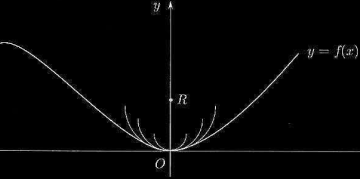

Geometric interpretation of the second derivative
Definition. If f has a derivative f' on a interval, and if f' is itsled differentiable, we denote the derivative of f' by f'' and call f'' the second derivative of f. Continuing in this manner, we obtain functions
f, f', f'', f(3), ..., f(n)
each of which is the derivative of the preceding one. f(n) is called the nth derivative, or the derivative of order n, of f.
In order for f(n) to exist at a point x, f(n)−1(t) must exist in a neighborhood of x (or in a one-sided neighborhood, if x is an endpoint of the interval on which f is defined), and f(n)−1 must be differentiable at x. Since f(n)−1 must exist in a neighborhood of x, f(n)−2 must be differentiable in that neighborhood.
Second derivative
Intuitively, curvature is the amount by which a curve deviates from being a straight line, or a plane, from being flat. It is the measure of how sharply the curve bends. For example a small circle bends more sharply than a bigger circle. If the first derivative gives the slope of the graph of a function at a point, the rate of change of the slope at a given point is expressed by the second derivative, hence, the second derivative furnishes details about the curvature of the function.
We shall therefore define the curvature of a circle to be the reciprocal of its radius,
R = 1/r
In the limit r ⟶ ∞, we have R ⟶ 0, which is the curvature of a straight line.
To define the curvature of an arbitrary curve, γ the idea is to approximate γ by circles with radii varying from point to point. For any point P on γ, there are infinitely many circles which are tangent to γ at P. We shall select on of these − called the osculating circle − which gives the best fir, and define the curvature of γ at the point P to be the reciprocal of the radius of the osculating circle− which gives the best fit, and define the curvature of γ at the point P to be the reciprocal of the radius of the osculating circle.
To identify the osculating circle, note that neat the point P the curve divides the plane in two parts. Some of the circles tangent to γ at P lie entirely on one side, and some line entirely on the other. The osculating circle separates these two kinds of circles. In the figure is drawn with a solid line.
Suppose the curve is given as graph of a function f. We shall find the osculating circle, by imposing that at the point P = 0, the function f(x) as the same first and second derivative as the osculating circle. The function f satisfies the following conditions
f(0) = f'(0) = 0, f''(0) ≥ 0.
The famyly of circles with center the y axis tangent to the graph of f at 0 is
as it can be easily verified ∀R, we have y'(0) = y(0) = 0. Among these cirlce we pick the one having the not only the first equalt to that of f but the second derivative as well, i.e.
y''(0) = f''(0) 5.10.1
We have that
Thus y''(0) = 1/R. Thus if 5.10.1 must be satisfied we must choose R such that
f''(0) = 1/R
The previous relation expresses the geometric meaning of the second derivative, as curvature of the graph of f. It can be proved that the curcature of the graph of f at a point x is
Example 5-10.2. For a parabola y = ax2, we have y'(x) = 2ax and y''(x) = 2a. thus
Notice how the curvature is at a maximum at x = 0, i.e. at the vertes and as x ⟶ ∞ is 0, and in fact both tails of the parabola look approximately flat as x tends to infinity. ■